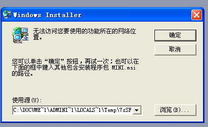

如图：

出现该问题，一般发生在WINXP，使用的office是2003的版本。修复，需要准备一个个工具，修复后还需要重新安装office，首先下载这个，首先，下载一个【Windows Install Clean Up】
安装，安装目录您无法修改，安装好以后它存放在【C:\Program Files\Windows Installer Clean Up\msicuu.exe】
运行，找到类似的关键字：Microsoft Office Professional Edition 2003，请认真找清楚，肯定有的，选中并按下Remove(第三个按钮)，它会弹出一个警告(Warning -- All products...)，直接按确定，等一会，sqsx就不会再多次弹出缺少mini.msi了。
注意：按此操作office2003就不能用了，怎么办？很简单，重新安装就行了。